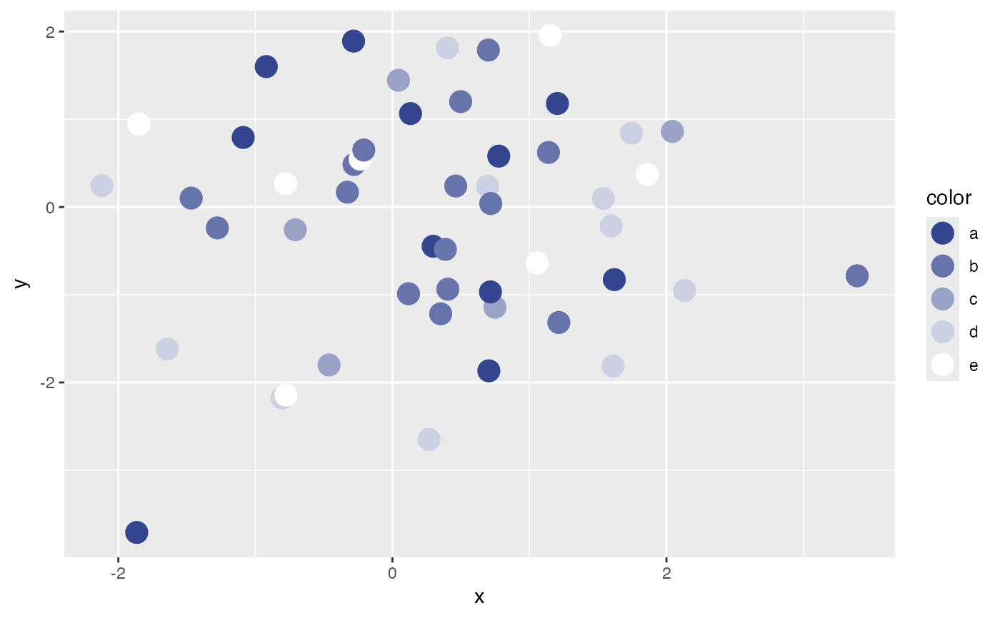

Get some number of equidistant colors between two colors.
color_gradienter(hi, lo = "#ffffff", shades)
| hi | A string, in RGB format ("#123456") |
|---|---|
| lo | A string, in RBG format ("#ffffff"). The default is white. |
| shades | An integer |
A list of strings, in RGB format, the length of `shades` and that are equidistant from each other from `hi` to `lo`.
This function takes two colors and a number and returns an n-length list of colors that are all equidistant from one another. This is handy for plotting categorical, ordinal, or binned data but you want to use continuous colors.
Note, this is a little buggy and may not work as expected. I don't know enough about how colors are handled to fix bugs. Please ese with caution.
#> [1] "#33458f" "#6674ab" "#99a2c7" "#ccd0e3" "#ffffff"# This can be fed into ggplot::scale_color_manual() df <- data.frame(x = rnorm(50, 0, 1), y = rnorm(50, 0, 1), color = sample(letters[1:5], 50, replace = TRUE)) ggplot(df, aes(x, y, color = color)) + geom_point(size = 5) + scale_color_manual(values = color_gradienter(hi = "#33458F", lo = "#ffffff", 5))